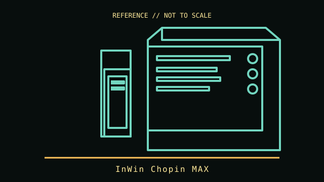

[ SMALL-FORM-FACTOR CASES // IDENTIFIED ENCLOSURE ]
InWin Chopin MAX
2022 Mini-ITX integrated-graphics enclosure. A model-specific enclosure record with physical fit limits, revision notes and manufacturer references.

IDENTIFICATION: Confirm the chassis label, model suffix, revision and regional bundle. Manufacturer maximum clearances are conditional on fan, radiator, drive-cage and cable configurations; allow room for connectors and service access.
Recorded specifications
| Cataloged model | InWin Chopin MAX |
|---|---|
| Era / class | 2022 Mini-ITX integrated-graphics enclosure |
| Dimensions and component limits | Mini-ITX board (maximum 170 × 170 mm); 217 × 84 × 244 mm (L × W × H). Includes a 200 W 80 PLUS Gold power supply on the documented MAX configuration; CPU-cooler height limit is 54 mm. No discrete graphics expansion slot. |
| Revision / variant identification | Chopin MAX is distinct from original Chopin and Chopin Pro; confirm included PSU and cable set on the nameplate/manual. |
Compatibility and fit notes
Use a Mini-ITX board with integrated graphics and a low-profile CPU cooler no taller than 54 mm. The included 200 W PSU is built into the chassis; it is not an ATX/SFX replacement bay. Check CPU sustained power and thermal behavior against the PSU and compact cooling budget.
- Measure the exact GPU, CPU cooler, PSU, radiator and fan stack; nominal maximums may not be simultaneously usable.
- Check motherboard standoff locations, front-panel connectors, PSU cable routing, drive cages and expansion-slot alignment before assembly.
- Consult the applicable manual for screw locations, removable brackets, included hardware and fan/ARGB pinouts; do not force panels or boards into place.
Model-specific notes
Chopin MAX is distinct from original Chopin and Chopin Pro; confirm included PSU and cable set on the nameplate/manual.
Sources & further reading
- InWin — Chopin MAXManufacturer product details.
- InWin — Chopin MAX user manualManufacturer manual; board and cooler fit depend on the exact build.
Specifications describe the identified model family; validate the exact part number, revision and regional package against the manufacturer's manual before purchase or installation.